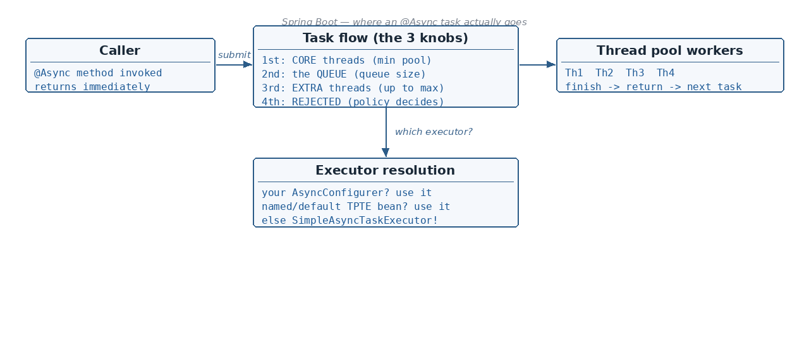

What exactly happens to Task8? Rejection policies
☕ 10 min read · 🎬 Video walkthrough · 📊 UML diagram · 💻 Runnable code
⚡ In a nutshell — What a thread pool is and how ThreadPoolExecutor (min/max pool, queue) works · What @Async really does — and which executor Spring picks behind the scenes · Why the defaults (ThreadPoolTaskExecutor with core 8 / SimpleAsyncTaskExecutor) hurt · 3 ways to supply your own executor — named bean, Java executor, AsyncConfigurer
In Java, a thread pool is created using the ThreadPoolExecutor object:

int minPoolSize = 2;
int maxPoolSize = 4;
int queueSize = 3;
ThreadPoolExecutor poolTaskExecutor = new ThreadPoolExecutor(
minPoolSize, maxPoolSize,
1, TimeUnit.HOURS, // keepAliveTime for extra threads
new ArrayBlockingQueue<>(queueSize));
Worked example (min pool = 2, max pool = 4, queue = 3):
RejectedExecutionException.Good to know: order matters — core threads first, then the queue, and only when the queue is full are extra threads (up to max) created. A huge queue therefore means extra threads are almost never created.
Added: "queue full + max pool reached" does not have to mean an exception — the reaction is pluggable via a
RejectedExecutionHandler. Interviewers almost always follow the Task8 question with "and can you change that behaviour?"
AbortPolicy (default) — Throws RejectedExecutionException — caller must handle itCallerRunsPolicy — The caller's own thread runs the task → natural back-pressure (submitter slows down)DiscardPolicy — Task is silently dropped (dangerous — no error, no log)DiscardOldestPolicy — Drops the oldest queued task, retries submitting the new oneThreadPoolExecutor executor = new ThreadPoolExecutor(
2, 4, 1, TimeUnit.HOURS,
new ArrayBlockingQueue<>(3),
new ThreadPoolExecutor.CallerRunsPolicy()); // Task8 runs on the caller thread
// Same knob on the Spring wrapper:
ThreadPoolTaskExecutor taskExecutor = new ThreadPoolTaskExecutor();
taskExecutor.setRejectedExecutionHandler(new ThreadPoolExecutor.CallerRunsPolicy());
Good to know:
CallerRunsPolicyis the usual production choice for background work — instead of losing tasks under load, the system degrades gracefully by slowing the producer down.
@SpringBootApplication
@EnableAsync // <-- IMPORTANT: without this, @Async is silently ignored
public class MyApplication {
public static void main(String[] args) {
SpringApplication.run(MyApplication.class, args);
}
}
Added:
@EnableAsyncis what activates the async post-processor that wraps@Asyncbeans in proxies. Forgetting it is the #1 reason "my @Async method runs on the same thread".
So how does this @Async annotation create a new thread?
A common answer: "Spring Boot uses SimpleAsyncTaskExecutor by default, which creates a
new thread every time." → Not fully correct.
SimpleAsyncTaskExecutor used.ThreadPoolTaskExecutor bean is present, so it creates its default ThreadPoolTaskExecutor with this configuration:corePoolSize = 8maxPoolSize = Integer.MAX_VALUE, queueCapacity = Integer.MAX_VALUE (unbounded)ThreadPoolTaskExecutor is nothing but a Spring Boot wrapper around the Java ThreadPoolExecutor.Integer.MAX_VALUE. This can lead to thread exhaustion, and the server might go down because of the overhead of managing so many threads.@Configuration
public class AppConfig {
@Bean(name = "abc")
public ThreadPoolTaskExecutor taskExecutor() {
int minPoolSize = 2;
int maxPoolSize = 4;
int queueSize = 3;
ThreadPoolTaskExecutor poolTaskExecutor = new ThreadPoolTaskExecutor();
poolTaskExecutor.setCorePoolSize(minPoolSize);
poolTaskExecutor.setMaxPoolSize(maxPoolSize);
poolTaskExecutor.setQueueCapacity(queueSize);
poolTaskExecutor.setThreadNamePrefix("MyThread-");
poolTaskExecutor.initialize();
return poolTaskExecutor;
}
}
At application startup, Spring Boot sees that the "abc" bean is present — so it makes
it the default. Even when we use @Async without any name, our "abc" will get picked.
@Async("abc") // works
@Async // ALSO works — "abc" became the default executor
@Configuration
public class AppConfig {
@Bean(name = "myThreadPoolExecutor")
public Executor taskPoolExecutor() {
int minPoolSize = 2;
int maxPoolSize = 4;
int queueSize = 3;
return new ThreadPoolExecutor(
minPoolSize, maxPoolSize, 1, TimeUnit.HOURS,
new ArrayBlockingQueue<>(queueSize),
new CustomThreadFactory());
}
}
class CustomThreadFactory implements ThreadFactory {
private final AtomicInteger threadNo = new AtomicInteger(1);
@Override
public Thread newThread(Runnable r) {
Thread thread = new Thread(r);
thread.setName("MyThread" + threadNo.getAndIncrement());
return thread;
}
}
Careful: during application startup, Spring Boot sees that a Java
ThreadPoolExecutor bean is present, so it does not create its own default
ThreadPoolTaskExecutor (the Spring wrapper one) — instead it sets the default executor
to SimpleAsyncTaskExecutor.
@Async("myThreadPoolExecutor") // MUST give the name
@Async // falls back to SimpleAsyncTaskExecutor!
SimpleAsyncTaskExecutor — Not recommended:
So, whenever we have defined our own ThreadPoolExecutor (Java one), always specify the
name also with the @Async annotation.
Implement AsyncConfigurer so plain @Async always resolves to YOUR executor:
@Configuration
public class AppConfig implements AsyncConfigurer {
private ThreadPoolExecutor poolExecutor;
@Override
public synchronized Executor getAsyncExecutor() {
if (poolExecutor == null) {
int minPool = 2;
int maxPool = 4;
int queueSize = 3;
poolExecutor = new ThreadPoolExecutor(
minPool, maxPool, 1, TimeUnit.HOURS,
new ArrayBlockingQueue<>(queueSize),
new CustomThreadFactory());
}
return poolExecutor;
}
}
With this in place, a plain @Async (no name) will work — Spring asks the
AsyncConfigurer for the executor first.
Added: Spring Boot's auto-created default executor is configurable via properties — often all you need, and worth knowing before writing any
@Configurationclass:
spring.task.execution.pool.core-size=2
spring.task.execution.pool.max-size=4
spring.task.execution.pool.queue-capacity=3
spring.task.execution.thread-name-prefix=MyThread-
spring.task.execution.shutdown.await-termination=true
spring.task.execution.shutdown.await-termination-period=20s
This tunes the same auto-configured ThreadPoolTaskExecutor from section 2 — plain
@Async picks it up. (Related: spring.task.scheduling.* tunes the @Scheduled pool.)
1) Different class. If @Async is applied to a method within the same class from
which it is being called, the proxy mechanism is skipped, because internal method calls
are NOT INTERCEPTED.
2) Public method. The method annotated with @Async must be public — AOP
interception works only on public methods.
@Async → AOP gets involved:
@RestController
public class UserController {
@Autowired
private UserService userService;
@GetMapping("/same-class")
public String wrong() {
selfAsync(); // same-class self-call: proxy BYPASSED,
return "ran synchronously"; // runs on the request thread!
}
@Async
public void selfAsync() { /* never intercepted when called from above */ }
@GetMapping("/other-class")
public String right() {
userService.doAsync(); // class1 -> class2 through the proxy: WORKS
return "submitted";
}
}
@Service
public class UserService {
@Async
public void doAsync() {
System.out.println("thread = " + Thread.currentThread().getName());
}
}
Use case 1 — @Transactional caller, @Async callee. The transaction context does NOT
transfer from the caller thread to the new thread which got created by @Async.
Use case 2 — both on the same method. Use with precaution: a new thread will be created and it has transaction management too, but its context is not the same as the parent thread's — so propagation will not work as expected.
@Transactional
@Async
public void update() { ... } // txn runs on the async thread, detached from caller
Use case 3 — @Async first, @Transactional inside. The async thread starts first, and the transaction begins on that new thread — clean and predictable:
Using Future — deprecated:
@Async
public Future<String> performTask() {
return new AsyncResult<>("value"); // AsyncResult is deprecated since Spring 6
}
// Controller class
Future<String> result = userService.performTaskAsync();
result.get(); // <-- main thread will WAIT here (blocking!)
Using CompletableFuture — the modern way:
@Async
public CompletableFuture<String> performTask() {
return CompletableFuture.completedFuture("value");
}
Added: without Spring you can get the same effect with
CompletableFuture.supplyAsync(() -> work(), executor)— it submits the lambda to the given executor.@Asyncis essentially the declarative version of this. Prefer non-blocking composition (thenApply,thenAccept,joinat the edge) overget().
Two situations:
1) Method has a return type
2) Method does not have a return type (void)
(1) With return type — the exception surfaces when you read the future:
try {
result.get();
} catch (final Exception ex) {
// handle it — the async exception arrives wrapped here
}
(2) Void method — nobody calls get(), so who catches it? Two options.
Within the async method itself:
@Async
public void performTask() {
try {
// work
} catch (Exception e) {
// handle / log
}
}
Or a custom handler for all uncaught async exceptions:
@Component
public class DefaultAsyncUncaughtExceptionHandler
implements AsyncUncaughtExceptionHandler {
@Override
public void handleUncaughtException(Throwable th, Method method, Object... params) {
// logging: method.getName(), th.getMessage() ...
}
}
But how to invoke this class? Wire it via the same AsyncConfigurer:
@Configuration
public class AppConfig implements AsyncConfigurer {
@Autowired
private AsyncUncaughtExceptionHandler asyncUncaughtExceptionHandler;
@Override
public AsyncUncaughtExceptionHandler getAsyncUncaughtExceptionHandler() {
return this.asyncUncaughtExceptionHandler;
}
}
Good to know:
AsyncUncaughtExceptionHandleris used only for void@Asyncmethods. If the method returns aFuture/CompletableFuture, the exception is stored in the future and delivered onget()/join()instead.
Added: the classic production bug — logs from
@Asyncmethods have no trace ID, andSecurityContextHolder.getContext()is empty.ThreadLocal-based context (MDC, security, locale) belongs to the caller thread and does NOT follow the task onto the pool thread. Fix it with aTaskDecorator: it wraps every submittedRunnable, capturing the context at submit time and restoring it on the worker thread.
public class MdcTaskDecorator implements TaskDecorator {
@Override
public Runnable decorate(Runnable runnable) {
// 1. runs on the CALLER thread at submit time — capture the context
Map<String, String> mdc = MDC.getCopyOfContextMap();
SecurityContext security = SecurityContextHolder.getContext();
return () -> {
// 2. runs on the POOL thread — restore, run, clean up
if (mdc != null) MDC.setContextMap(mdc);
SecurityContextHolder.setContext(security);
try {
runnable.run();
} finally {
MDC.clear();
SecurityContextHolder.clearContext(); // pool threads are REUSED — always clean up
}
};
}
}
Plug it into your executor (works with Way 1 and Way 3):
ThreadPoolTaskExecutor poolTaskExecutor = new ThreadPoolTaskExecutor();
poolTaskExecutor.setTaskDecorator(new MdcTaskDecorator());
Good to know: the
finallycleanup is not optional — pool threads are reused, so a leaked MDC or SecurityContext from task N will silently leak into task N+1.
spring.threads.virtual.enabled=true makes blocking I/O cheap; classic pool-size formulas matter mainly for CPU-bound work and bounded resources (DB pools).TaskDecorator.setWaitForTasksToCompleteOnShutdown(true) + a termination timeout, or in-flight async work dies on deploy.@Async runs the method on another thread; needs @EnableAsync to do anything.ThreadPoolTaskExecutor
(core 8, unbounded queue) — not recommended (latency, exhaustion, memory).ThreadPoolTaskExecutor bean becomes the default (plain @Async finds it); a Java
ThreadPoolExecutor bean does NOT — name it in @Async("...") or Spring silently uses
SimpleAsyncTaskExecutor. Industry standard: implement AsyncConfigurer.@Async works only via the proxy: different class + public method; same-class
self-calls are not intercepted.@Transactional → @Async loses the context;
@Async → @Transactional starts a fresh txn on the new thread (safe pattern).CompletableFuture (Future/AsyncResult deprecated); handle exceptions with
get() try/catch, or AsyncUncaughtExceptionHandler for void methods.AbortPolicy (default, throws), CallerRunsPolicy
(back-pressure), DiscardPolicy, DiscardOldestPolicy.spring.task.execution.* properties — no code.ThreadLocals and don't cross threads — restore them with a
TaskDecorator (and clean up in finally, threads are reused).Next topic: Custom Interceptors and Annotations — HandlerInterceptor, @Target/@Retention, and AOP-based interceptors.
👏 Found this useful? Give it a few claps so more developers discover it, and follow for the whole series — every article ships with a UML diagram, runnable code, a narrated video, and a companion PDF. Happy building! 🚀